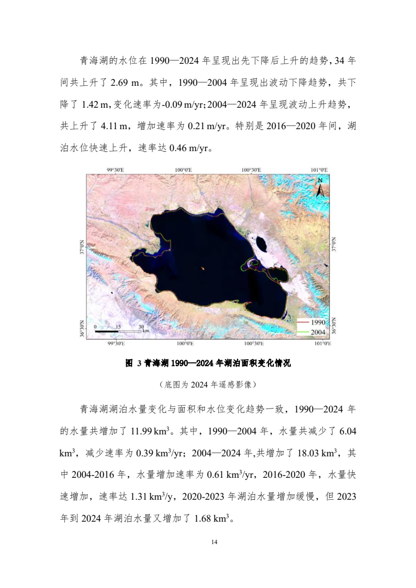

QINGHAI LAKE · RESEARCH EXPLORER
每一步用了什么，
又把什么交给下一步。
《青海湖高原湖泊湿地演变趋势及应对措施》技术路线拆解。
沿着输入、模型、输出、结果与去向，追踪完整证据链。

01 / 从空间变化出发 原报告 · 图3 / 正文14页
湖面扩张 ≠ 其他湿地同步增加
报告分别研究湖泊水体与“除水体外的湿地”。两条线在生态影响和管理应对环节汇合，不能把它们的面积趋势混为一谈。
+364.36 km²湖面 / 2004—20242804.92 → 2081其他湿地 km² / 1990 → 2024
01 / INPUT → MODEL → OUTPUT → NEXT USE
全局传递矩阵
先看全局：每行都是一个可展开的研究环节。
#研究环节核心方法/模型直接产出下一步怎么用
02 / STEP-BY-STEP TECHNICAL ROUTE
逐环节查看数据、模型、输出和传递。
选择节点查看详情 右侧默认先展示本步结果如何流向下一步
没有匹配节点，请更换关键词。
当前节点 ↗ 点击“输出去向”继续追踪
02 / SCENARIO EXPLORER
未来预测，怎样走向风险判断？
切换年份和情景，查看表6的离散预测结果。所有增量均相对2024年。
风险章节使用约1 / 2 / 4 / 6 / 8 m的代表性水位分析，不能把这些概化结果当作每个情景的精确淹没计算。
03 / HOW TO READ
把结论与证据分开看。
本站仅解读这份报告，不包含其他研究项目。节点连线是依据报告整理的阅读路径，并非原报告的技术路线图。
哪些是计算结果，哪些是综合讨论？
湖面提取、湿地分类、水温模拟和未来水量预测有明确方法描述；鱼类、鸟类及部分生态机制主要结合文献与监测资料讨论。不能把全部章节理解为同一个定量模型的输出。
报告中有哪些需要核实的口径？
第52页1990与2024年湿地面积相减为723.92 km²，第54页碳汇估算采用715.98 km²；该数对应前文1990—1995年的差值。表6标题出现“2023”，但数据行是2035年。第56页2035年范围概述与表6不完全一致，本站情景数值采用表6。以上是文本核对发现，不替原作者修订结论。
如何回到原文？
每个节点均附正文页码及PDF链接；PDF阅读器页码比正文页码多9页。关键图页可放大查看。浏览器如不支持页码定位，可手动输入PDF页码。